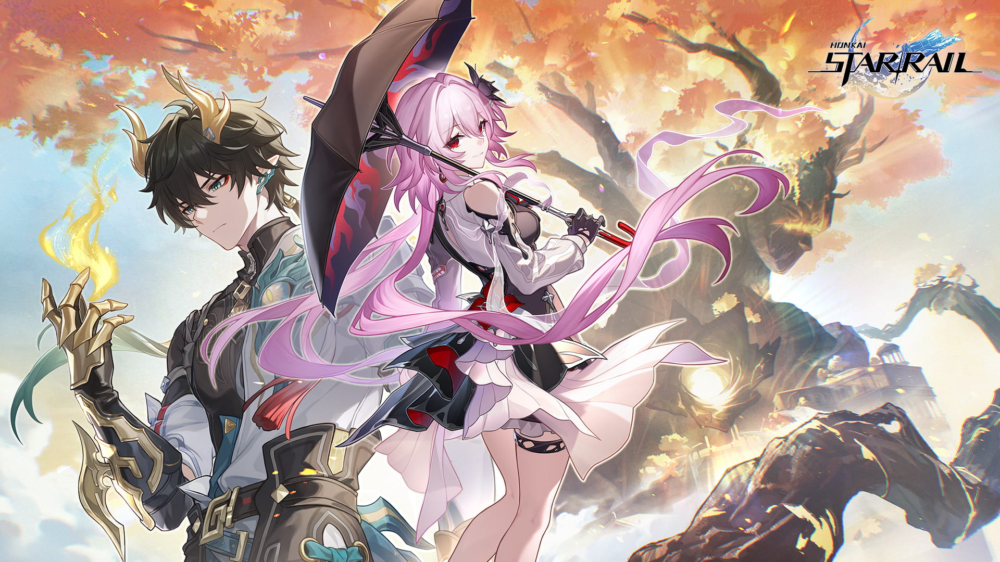

Обновление версии 3.6 «Темень вернулась на пустоши»
"Уж кончается ночь, и заря недалёко. Чужеземцы путь свой беспрестанно продолжают, и сойдутся вновь они на краю света, где всей земле светит взошедшая утренняя звезда."
Трейлер персонажа Дань Хэн: Освободитель Пустошей: «Дом»
«Зову дракона земли не быть» Дань Хэн: Освободитель Пустошей | «Ближе к звёздам»
Трейлер путешествия тысячи звёзд: «Сказания о героях Амфореуса»
Короткометражный анимационный фильм Honkai: Star Rail | «Тяготы пути»
Honkai: Star Rail
Хонкай: Стар Рейл — это компьютерная игра в жанре ролевой игры (RPG), разработанная компанией HoYoverse. Она погружает игроков в захватывающий научно-фантастический мир, где человечество борется с загадочными существами, известными как Стеллароны. Эти космические сущности обладают огромной силой и могут изменять реальность, что приводит к конфликтам между различными фракциями.

В игре представлено множество уникальных персонажей, каждый из которых обладает своими способностями и характером. Игроки могут формировать отряд из до пяти героев, каждый из которых имеет свою специализацию и роль в бою. Персонажи развиваются по мере прохождения игры, получая новые навыки и улучшения, что позволяет игрокам создавать разнообразные стратегии и тактики.
Хонкай: Стар Рейл предлагает игрокам исследовать разнообразные локации, включая футуристические города, заброшенные лаборатории и таинственные планеты. Каждая зона наполнена своими уникальными особенностями и секретами, что делает процесс исследования увлекательным и разнообразным. В игре также есть множество головоломок, которые требуют от игроков логического мышления и внимательности.
Сражения в Хонкай: Стар Рейл динамичны и разнообразны. Игроки могут использовать различные комбинации атак и способностей, чтобы побеждать врагов. Боевая система игры включает в себя элементы тактики и стратегии, что позволяет игрокам выбирать оптимальные решения в зависимости от ситуации. Кроме того, в игре есть возможность прокачки и улучшения оружия и экипировки, что делает каждый бой уникальным.
Сюжет Хонкай: Стар Рейл полон интриг, неожиданных поворотов и эмоциональных моментов. Игроки будут погружены в историю, полную тайн и загадок, где каждое их решение может повлиять на развитие событий. Сюжетная линия игры разделена на несколько актов, каждый из которых раскрывает новые аспекты мира Хонкай и взаимоотношений между персонажами.
Хонкай: Стар Рейл отличается высоким качеством графики и детализированным миром. Разработчики уделили большое внимание проработке окружения, персонажей и анимаций, что создает ощущение погружения и реализма. Музыкальное сопровождение игры также заслуживает отдельной похвалы, добавляя эмоциональности и драматизма в ключевые моменты.
В целом, Хонкай: Стар Рейл — это увлекательная RPG с глубоким сюжетом, интересными персонажами и захватывающим игровым процессом. Она предлагает игрокам множество возможностей для исследования, сражений и стратегического планирования, что делает ее привлекательной для любителей жанра.